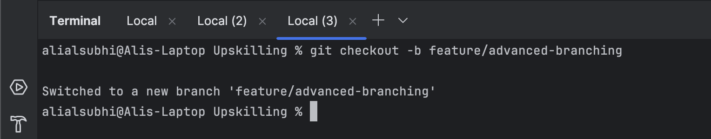
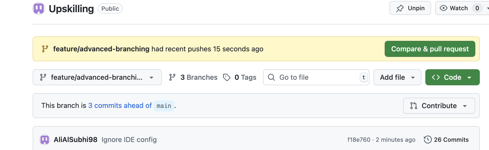
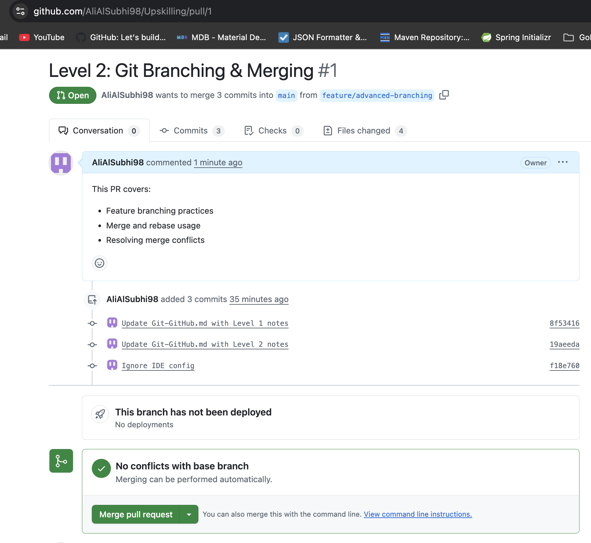
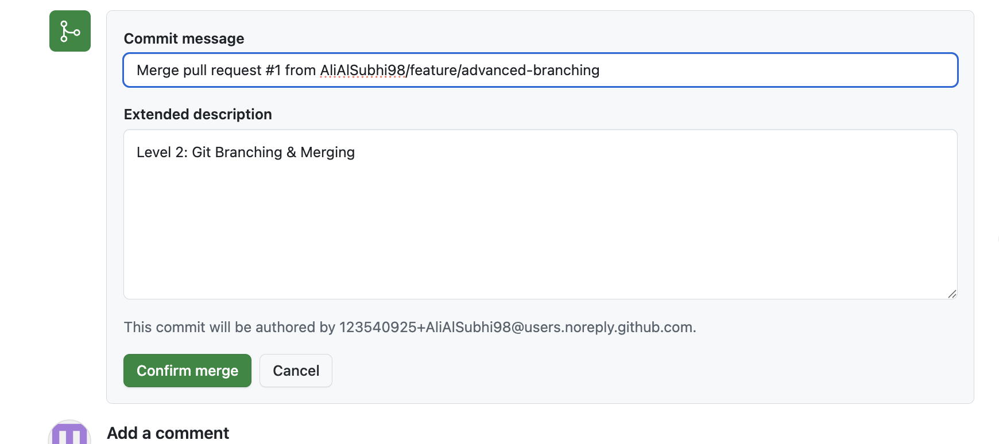
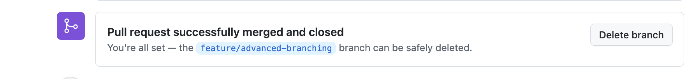

Git & GitHub¶
Goal: Master version control and collaboration using Git and GitHub.
Current Level: Level 1
Level 1: Git Basics¶
- Competencies: Init, Clone, Add, Commit, Push, Pull, Branching
- Commands:
git init,git clone,git add,git commit,git push,git pull,.gitignore - Checklist:
- Create a new repo and push to GitHub
- Clone a repo and make your first commit
- Use .gitignore to exclude files
Level 2: Advanced Branching & Merging¶
- Competencies: Fast-Forward Merges, Three-Way Merges, Rebasing, Merge Conflicts, PRs
- Commands:
git branch,git checkout -b,git rebase,git merge,git cherry-pick, GitHub PRs - Checklist:
- Create feature branches and merge using both merge and rebase
- Resolve complex merge conflicts
- Use git cherry-pick to selectively move commits across branches
Level 3: Commit History & Recovery¶
- Competencies: Reflog, Reset, Revert, Bisect, Tagging
- Commands:
git reflog,git reset --hard,git revert,git bisect,git tag - Checklist:
- Recover lost commits using reflog
- Use git bisect to find a bug in commit history
- Reset changes safely without losing work
Level 4: Enterprise GitOps & Security¶
- Competencies: Protected Branches, Signed Commits, CI/CD, LFS, GitHub Actions
- Commands:
git commit -S,git lfs, GitHub Actions, Protected Branch Policies - Checklist:
- Enforce signed commits for security
- Set up GitHub Actions for automated testing
- Implement branch protection rules to enforce workflow policies
Level 5: Deep Git Internals & Large-Scale GitOps¶
- Competencies: Custom Hooks, Packfiles, GitHub API, Large Repos
- Commands:
git fsck,git worktree,git gc,git filter-branch, GitHub API - Checklist:
- Optimize a large repository using git gc and repack
- Write a custom Git hook for automated commit checks
- Use the GitHub GraphQL API to automate repo management
Resources¶
- Pro Git Book
- GitHub Docs
- Atlassian Git Tutorials
- How to Use Git Cherry-Pick: With Practical Examples
Progress¶
Level 1: Git Basics
Status: Completed
Focus: Init, Clone, Add, Commit, Push, Pull, Branching
Commands Practiced:
git init, git clone, git add, git commit, git push, git pull, .gitignore
Evidence:
- Commit History - Upskilling repo commits
Level 2: Branching & Merging
Status: Completed
Focus: Fast-Forward, Rebasing, Merge Conflicts, Cherry-Pick, PRs
Evidence:
- Feature Branching Walkthrough
- Merge Conflict Resolution (Completed 27-07-2025): Successfully resolved complex conflicts across multiple file sections
- Cherry-Pick Practice (Completed 04-08-2024): Successfully demonstrated selective commit application across branches
What I Learned: - Feature branching with proper naming and workflow - Merge vs rebase strategies and when to use each - Complex conflict resolution by combining changes intelligently - Cherry-pick for selective commit application across branches
Resources Used: ChatGPT (AI Assistant) for step-by-step guidance
Applied Knowledge: Built Java projects (UserAuth, PaymentProcessor, NotificationService) and practiced real-world Git scenarios
All Level 2 tasks completed!
Level 3: Commit History & Recovery
Status: Planned
Focus: git reflog, git reset, git revert, git bisect
Level 4: GitOps & Security
Status: Planned
Focus: CI/CD, Signed Commits, LFS, Protected Branches
Level 5: Git Internals & Automation
Status: Planned
Focus: Hooks, Packfiles, GitHub API, Performance
Evidence¶
Level 1 Evidence
Repository: Practice Projects
Demonstrations:
- repo-creation-push - Web project with Git workflow
- clone-and-commit - Java HelloWorld with version control
- gitignore-basics - File exclusion patterns
Level 2 Evidence
Repository: Practice Projects
Demonstrations:
- branching-workflow - Feature branch management
- merge-vs-rebase - Different merge strategies
- cherry-pick-practice - Selective commit application
Visual Documentation:





Personal Notes¶
Note #1: Level 2 – Branching & Merging (26-07-2025)
To achieve Level 2: Branching & Merging, I followed these steps:
1. Create a feature branch
git checkout -b feature/advanced-branching
2. Make changes and commit
git add .
git commit -m "Update Git-GitHub.md with Level 2 notes"
3. Rebase onto main
# Switch to main
git checkout main
# Pull the latest changes
git pull origin main
# Switch back to your feature branch
git checkout feature/advanced-branching
# Rebase onto latest main
git rebase main
4. Push the branch and create a Pull Request
git push origin feature/advanced-branching
5. Merge Pull Request
- Open your PR on GitHub
- Click "Merge pull request"
- Confirm with "Confirm merge"
- Optionally click "Delete branch"
Note #2: Level 2 – Merge Conflict Resolution (27-07-2025)
Exercise Overview: Practiced resolving complex merge conflicts across multiple file sections.
Scenario Created:
- Created conflicting changes in practice-file.md across multiple sections
- Main branch: Production configuration (MySQL, enhanced features)
- Feature branch: Development configuration (PostgreSQL, basic features)
Resolution Process:
# 1. Attempt merge (creates conflict)
git merge main
# Output: CONFLICT (add/add): Merge conflict in practice-file.md
# 2. Examine conflict markers
# <<<<<<< HEAD (current branch)
# ======= (separator)
# >>>>>>> main (incoming branch)
# 3. Resolve by combining best of both versions
# - Combined introduction text
# - Added both production and development configurations
# - Merged feature lists
# - Created comprehensive notes section
# 4. Complete the merge
git add practice-file.md
git commit -m "Resolve merge conflicts: combine dev and production features"
Skills Practiced:
- Understanding conflict markers
- Strategic conflict resolution (combining vs. choosing)
- Maintaining clean repository after practice
- Professional merge commit messages
Key Learnings:
- Complex conflicts can be resolved by combining both versions intelligently
- Always clean up practice files to keep repository organized
- Document the resolution strategy in commit messages
Note #3: Level 2 – Cherry-Pick Practice (04-08-2025)
Exercise Overview: Successfully practiced selective commit application using git cherry-pick.
Scenario Created: - Created feature branch with 3 different features: - UserAuth.java (user authentication) - PaymentProcessor.java (payment processing) - NotificationService.java (notification service) - Each feature committed separately for selective picking
Cherry-Pick Process:
# 1. Created feature branch with multiple commits
git checkout -b feature/user-authentication
# Added UserAuth.java, PaymentProcessor.java, NotificationService.java
# 2. Switched back to main branch
git checkout main
# 3. Cherry-picked specific commits
git cherry-pick 12827b6 # Payment processing feature
git cherry-pick c1de365 # User authentication feature
git cherry-pick 75ecc57 # Notification service feature
Skills Practiced:
- Understanding commit hashes and their purpose
- Selective commit application across branches
- Managing multiple features in separate commits
- Verifying cherry-pick results
Key Learnings:
- Cherry-pick creates new commit IDs while preserving changes
- Useful for applying hotfixes or specific features to different branches
- Maintains clean commit history by selecting only needed changes
- Essential skill for advanced Git workflows and release management